新 PC
程序计数器 (PC)
a
U? m。,，
1 valM
写回
I'l
s
数据
存储器
访存
Jl
f-‘ valE
cc
ALU
TT
A end
执行
aluA, aluB
f|
II
占“ valA, valB
icode, ifun rA
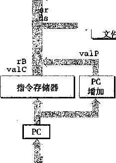
SEQ的抽象视图，一种顺序实现。指令执 行过程中的信息处理沿着顺时针方向的流程 进行，从用程序计数器（PC)取指令开始， 如图中左下角所示
srcB 盧 tE, dstM r
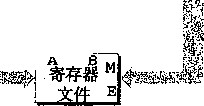
图 4-22
跟踪记录表明，这条指令的效果就是将PC设为0x028, halt指令的地址。同时也将％63口 置为了 128。
4.3.2 SEQ 硬件结构
实现所有Y86指令所需要的计算可以 组织成六个基本阶段：取指、译码、执行、
访存、写回和更新PC。图4-22是一个能执 行这些计算的硬件结构的抽象表示。程序 计数器放在寄存器中，在图中左下角（标 明为“PC”)。然后，信息沿着线流动（多 条线组合在一起就用宽一点的灰线来表 示），先向上，再向右。同各个阶段相关的 硬件单元（hardware unit)负责执行这些处 理。在右边，反馈线路向下，包括要写到 寄存器文件的更新值，以及更新的程序计 数器值。正如在4.3.3节中讨论的那样，在 SEQ中，所有硬件单元的处理都在一个时 钟周期内完成。这张图省略了一些小的组 合逻辑块，还省略了所有用来操作各个硬 件单元以及将相应的值路由到这些单元的 控制逻辑。稍后会补充这些细节。我们从 下往上画处理器和流程的方法似乎有点奇 怪。在开始设计流水线化的处理器时，我 们会解释这么画的原因。
硬件单元与各个处理阶段相关联：
取指 ： 将程序计数器寄存器作为地址，
指令存储器读取指令的字节。PC增加器 (PC incrementer)计算 va 1P,即增加了的 程序计数器。
译码：寄存器文件有两个读端口 A和B,
从这两个端口同时读寄存器值valA和valB。
执行：执行阶段会根据指令的类型，
将算术/逻辑单元（ALU)用于不同的目 的。对整数操作，它要执行指令所指定的 运算。对其他指令，它会作为一个加法器 来计算增加或减少栈指针，或者计算有效 地址，或者只是简单地加0,将一个输入传 递到输出。
条件码寄存器（CC)有三个条件码位。ALU负责计算条件码的新值。当执行一条跳转指令 时，会根据条件码和跳转类型来计算分支信号Cnd。
访存：在执行访存操作时，数据存储器读出或写人一个存储器字。指令和数据存储器访问的 是相同的存储器位置，但是用于不同的目的。
写回：寄存器文件有两个写端口。端口 E用来写ALU计算出来的值，而端口 M用来写从数
据存储器中读出的值。
图4-23更详细地给出了实现SEQ所需要的硬件（分析每个阶段时,我们会看到完整的细 节)。我们看到一组和前面一样的硬件单元，但是现在线路看得更清楚了。这幅图以及其他的硬 件图，都使用以下的画图惯例。
• 浅灰色方框表示硬件单元。 这包括存储器、ALU等等。在我们所有的处理器实现中，都会 使用这一组基本的单元。我们把这些单元当作“黑盒子”，不关心它们的细节设计。
• 控制逻辑块是用灰色圆角矩形表示的。 这些块用来从一组信号源中进行选择，或者用来计 算一些布尔函数。我们会非常详细地分析这些块的，包括给出HCL描述。
• 线路的名字在白色圆角方框中说明。 它们只是线路的标识，而不是什么硬件元素。
宽度为字长的数据连接用中等粗度的线表示。 每条这样的线实际上都代表一簇32根线， 并列地连在一起，将一个字从硬件的一个部分传送到另一部分。
• 宽度为字节或更窄的数据连接用细线表示。 根据线上要携带的值的类型，每条这样的线实 际上都代表一簇4根或8根线。
单个位的连接用虚线来表示。 这代表芯片上单元与块之间传递的控制值。
图4-18〜图4-21中所有的计算都有这样的性质，每一行都代表某个值的计算，如valP,或 者激活某个硬件单元，如存储器。图4-24的第二栏列出了这些计算和动作。除了我们已经讲过 的那些信号以外，还列出了四个寄存器ID信号：srcA, valA的源；srcB，vdB的源；dsffi,写 入valE的寄存器 ； 以及dstM，写入valM的寄存器。
图中，右边两栏给出的是指令0P1和mrmovl的计算，说明要计算的值。要将这些计算映射 到硬件上/我们要实现控制逻辑，它能在不同硬件单元之间传送数据，以及操作这些单元，使得 对每个不同的指令执行指定的运算。这就是控制逻辑块的目标，控制逻辑块在图4-23中用灰色 圆角方框表示。我们的任务就是依次经过每个阶段，创建这些块的详细设计。
SEQ 的时序
在介绍图4-18〜图4-21的表时，我们说过要把它们看成是用程序符号写的，那些赋值是从 上到下顺序执行的。然而，图4-23中硬件结构的操作运行完全不同，一个时钟变化会引发一个 经过组合逻辑的流，来执行整个指令。让我们来看看这些硬件怎样实现表中列出的这一行为。
SEQ的实现包括组合逻辑和两种存储器设备：时钟寄存器（程序计数器和条件码寄存器)， 随机访问存储器（寄存器文件、指令存储器和数据存储器）。组合逻辑不需要任何时序或控 制——只要输入变化了，值就通过逻辑门网络传播。正如提到过的那样，我们也将读随机访问存 储器看成和组合逻辑一样的操作，根据地址输入产生输出字。对于较小的存储器来说（例如寄存 器文件)，这是一个合理的假设，而对于较大的电路来说，可以用特殊的时钟电路来模拟这个效 果。由于指令存储器只用来读指令，因此我们可以将这个单元看成是组合逻辑。
现在还剩四个硬件单元需要对它们的时序进行明确的控制——程序计数器、条件码寄存器、 数据存储器和寄存器文件。这些单元通过一个时钟信号来控制，它触发将新值装载到寄存器以及 将值写到随机访问存储器。每个时钟周期，程序计数器都会装载新的指令地址。只有在执行整数 运算指令时，才会装载条件码寄存器。只有在执行rmmovl、pushl或call指令时，才会写数 据存储器。寄存器文件的两个写端口允许每个时钟周期更新两个程序寄存器，不过我们可以用特 殊的寄存器ID OxF作为端口地址，来表明在此端口不应该执行写操作。
要控制处理器中活动的时序，只需要寄存器和存储器的时钟控制。硬件获得了如图 4-18〜图4-21的表中所示的那些赋值顺序执行一样的效果，即使所有的状态更新实际上同时发 生，且只在时钟上升开始下一个周期时。之所以能保持这样的等价性，是由于Y86指令集的本 质，因为我们遵循以下原则组织计算：
处理器从来不需要为了完成一条指令的执行而去读由该指令更新了的状态。
执行
访存
程序计数器 (PC)
ins tr 一 valid
imem 一 error
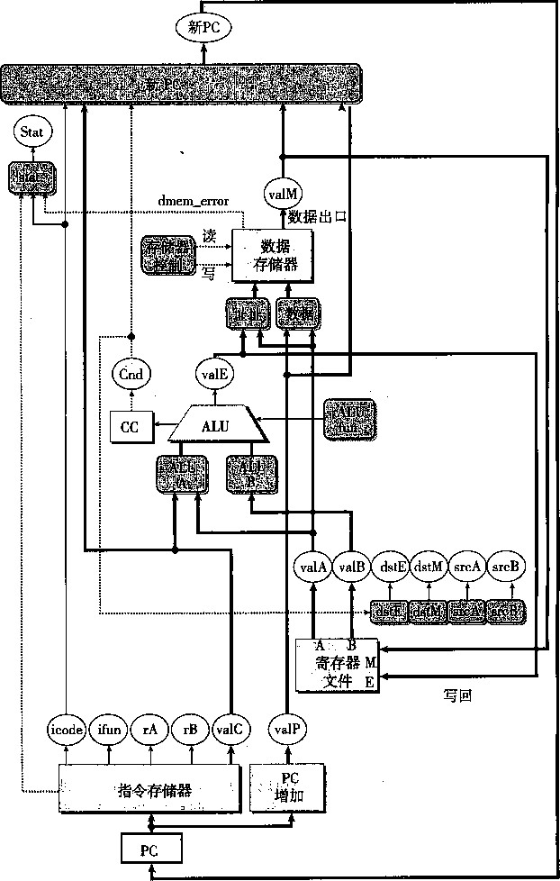
图4-23 SEQ的硬件结构，一种顺序实现。有些控制信号以及寄存器和控制字连接没有画出来
这条原则对实现的成功来说至关重要。为了说明问题，假设我们对pushl指令的实现是先 将％6邱减4,再将更新后的％es P 值作为写操作的地址。这种方法同前面所说的那个原则相违 背。为了执行存储器操作，它需要先从寄存器文件中读更新过的栈指针。然而，我们的实现（图 4-20)产生出减后的栈指针值，作为信号valE,然后再用这个信号既作为寄存器写的数据，也 作为存储器写的地址。因此，在时钟上升开始下一个周期时，处理器就可以同时执行寄存器写和 存储器写了。
阶段 |
计算 |
0P1 rA, rB |
mrmovl D(rB), rA |
取指 |
icode, ifun |
icode: ifun — Mj[PC] |
icode: ifun — M^PC] |
rA, rB |
rA:rB^-M,[PC + l] |
rA:rB —MJPC + 1] |
|
valC |
valC — M 4 [PC + 2] |
||
valP |
valP — PC + 2 |
valP — PC + 6 |
|
译码 |
val A, srcA |
val A R[rA] |
|
valB, srcB |
valB — R[rB] |
valB — R[rB] |
|
执行 |
valE |
valE —■ valBOPvalA |
valE — valB + valC |
Cond. codes |
Set CC |
||
访存 |
read/write |
valM — M 4 [valE] |
|
写回 |
E port, dstE |
R[rB] — valE |
|
M port, dstM |
R[rA] — valM |
||
更新PC |
PC |
PC 4- valP |
PC — valP |
图4-24标识顺序实现的不同计算步骤。第二栏标识SEQ阶段正在计算的值，或正在执行的操作。以 指令0P1和mrmovl的计算作为示例
再举个例子来说明这条原则，我们可以看到有些指令（整数运算）会设置条件码，有些指令 (跳转指令）会读取条件码，但没有指令必须既设置又读取条件码。虽然要到时钟上升开始下一 个周期时，才会设置条件码，但是在任何指令试图读之前，它们都会更新。
以下是汇编代码，左边列出的是指令地址，图4-25给出了 SEQ硬件如何处理其中第3和第 4行指令：
|
1 |
0x000: |
irmovl $0x100,%ebx |
# |
%ebx <-- 0x100 |
|
2 |
0x006: |
irmovl $0x200, °/ 0 edx |
# |
°/ 0 edx <-- 0x200 |
|
3 |
0x00c: |
addl °/ 0 edx,7 0 ebx |
# |
%ebx <— 0x300 CC <— 000 |
|
4 |
OxOOe: |
je dest |
# |
Not taken |
|
5 |
0x013: |
rmmovl %ebx,0(%edx) |
# |
M [0x200] <— 0x300 |
|
6 |
0x019: |
dest: halt |
标号为1〜4的各个图是4个状态元素，还有组合逻辑，以及状态元素之间的连接。组合逻 辑被条件码寄存器环绕着，因为有的组合逻辑（例如ALU)产生输入到条件码寄存器，而其他 部分（例如分支计算和PC选择逻辑）又将条件码寄存器作为输入。图中寄存器文件和数据存储 器有独立的读连接和写连接，因为读操作沿着这些单元传播，就好像它们是组合逻辑，而写操作 是由时钟控制的。
图4-25中的标有颜色的代码表明电路信号是如何与正在被执行的不同指令相联系的。我们 假设处理是从设置条件码开始的，按照ZF、SF和OF的顺序，设为100。在时钟周期3开始的 时候（点1),状态元素保持的是第二条irmovl指令（第2行）更新过的状态，该指令用淡灰 色表示。组合逻辑用白色表示，表明它还没有来得及对变化了的状态做出反应。时钟周期开始 时，地址0x00c载入程序计数器中。这样就会取出和处理addl指令（第3行)。值沿着组合 逻辑流动，包括读随机访问存储器。在这个周期末尾（点2),组合逻辑为条件码产生了新的值 (000),更新了程序寄存器％ebx,以及程序计数器的新值（OxOOe)。在此时，组合逻辑已经根 据addl指令被更新了，但是状态还是保持着第二条irmovl指令（用浅灰色表示).设置的值。
当时钟上升开始周期4时（点3),会更新程序计数器、寄存器文件和条件码寄存器 ， 但是 组合逻辑还没有对这些变化做出反应，所以用白色表示。在这个周期内 ， 会取出并执行je指
令（第4行),在图中用深灰色表示。因为条件码ZF为0,所以不会选择分支。在这个周期末尾 (点4),程序计数器已经产生了新值0x013。组合逻辑已经根据je指令（用深灰色表示）被更 新过了，但是直到下个周期开始之前，状态还是保持着addl指令（用灰色表示）设置的值。
1
如此例所示，用时钟来控制状态元素的更新，以及值通过组合逻辑来传播，足够控制我们 SEQ实现中每条指令执行的计算了。每次时钟由低变高时，处理器开始执行一条新指令。
周期 1-
周期 2-
周期 3
• 周期 4
1 2 3 4 5 周周周周周
0x000: |
irmovl $0x100,7,ebx # °/ 0 ebx <-- |
0x100 |
|
0x006: |
irmovl $0x200,%edx # %edx <— |
0!X200 • |
|
0x00c; |
addl %edx,51el>;x ! # %ebx <— |
0X300 CC <一 |
000 |
mm |
纖雙_. |
_ |
|
0x013: |
rmmovl %ebx,0(%edx) # M[0x200] |
<--0x300 |
②周期 3 结束时
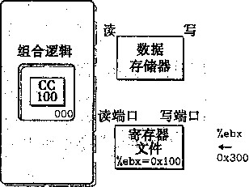
OxOOe
①周期 3 开始时
数据 ? 存储器 ,
组合逻辑
端口 写端口
-jm
y t gbx—OxlOO
¢-
1¾¾
OxOOc
mmu
0x00c
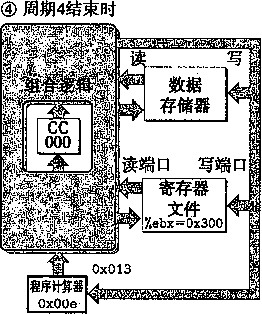
③周期 4 开始时
M
组合逻辑
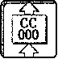
读端口 写端口
文件
Kebx=0x300
mm^A-
OxOOe V-
图4-25跟踪SEQ的两个执行周期。每个周期开始时，状态元素（程序计数器、条件码寄存器、寄存 器文件以及数据存储器）是根据前一条指令设置的。信号传播通过组合逻辑，创建出新的状 , 态元素的值。在下一个周期开始时，这些值会被加载到状态元素中
SEQ 阶段的实现
本节会设计实现SEQ所需要的控制逻辑块的HCL描述。完整的SEQ的HCL描述请参见网 络旁注ARCH:HCL。在此，我们给出一些例子，而其他的作为练习题。建议你做做这些练习来 检验你的理解，即这些块是如何与不同指令的计算需求相联系的。
我们没有讲的那部分SEQ的HCL描述，是不同整数和布尔信号的定义，它们可以作为 HCL操作的参数。其中包括不同硬件信号的名字，以及不同指令代码、功能码、寄存器名字、 ALU操作和状态码的常数值。只列出了那些在控制逻辑中必须被显式引用的常数。图4-26是我 们使用的常数。按照习惯，常数值都是大写的。
名称 |
值（十六进制） |
含义 |
INOP |
0 |
nop 指令的代码 |
IHALT |
1 |
halt 指令的代码 |
IRRMOVL |
2 |
rrmovl 指令的代码 |
工 IRMOVL |
3 |
irmovl 指令的代码 |
IRMMOVL |
4 |
rmmovl 指令的代码 |
IMRMOVL |
5 |
mrmovl 指令的代码 |
IOPL |
6 |
整数运算指令的代码 |
IJXX |
7 |
跳转指令的代码 |
ICALL |
8 |
call 指令的代码 |
IRET |
9 |
ret 指令的代码 |
IPUSHL |
A |
pushl 指令的代码 |
IPOPL |
B |
popl 指令的代码 |
FNONE |
0 |
默认函数代码 |
RESP |
4 |
%esp 的寄存器 ID |
RNONE |
F |
表明没有寄存器文件访问 |
ALUADD |
0 |
加法运算的功能 |
SAOK |
1 |
①正常操作状态码 |
SADR |
2 |
②地址异常状态码 |
SINS |
3 |
③非法指令状态码 |
SHLT |
4 |
④ halt 状态码 |
图4-26 HCL描述中使用的常数值。这些值表示的是指令、功能码、寄存器ID、ALU操作和状态码的编码
除了图4-18〜图4-21中所示的指令以外，还包括了对nop和halt指令的处理。nop指令 只是简单地经过各个阶段，除了要将PC加1,不进行任何处理。halt指令使得处理器状态被 设置为HLT,导致处理器停止运行。
取指阶段
如图4-27所示，取指阶段包括指令存储器硬件单元。以PC作为第一个字节（字节0)的地 址，这个单元一次从存储器读出6个字节。第一个字节被解释成指令字节，（标号为“Split”的 单元）分为两个4位的数。然后，标号为“icode”和“ifirn”的控制逻辑块计算指令和功能码, 等于从存储器读出的值，或者当指令地址不合法时信号imem_error指明），这些值对应于 nop指令。根据icode的值，我们可以计算三个一位的信号（用i线表示）：
instr—valid:这个字节对应于一个合法的Y86指令吗？这个信号用来发现不合法的指令。 need 一 regids ： 这个指令包括一个寄存器指示符字节吗？ need 一 valC ： 这个指令包括一个常数字吗？
(当指令地址越界时会产生的）信号instr_valid和imem_error在访存阶段被用来产 生状态码。
让我们再来看一个例子 ， need 一 regids的HCL描述只确定了 icode的值是否为一条带有 寄存器指示值字节的指令。
bool need_regids =
icode in { IRRMOVL, I0PL, IPUSHL, IPOPL,
IIRMOVL, IRMMOVL, IMRMOVL >;
icode ifun rA rB valC valP
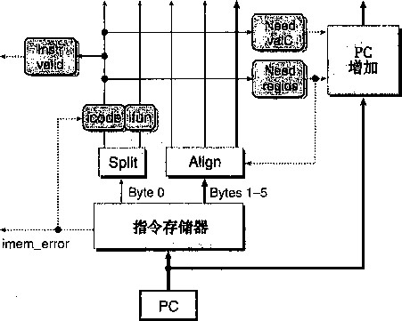
图4-27 SEQ的取指阶段。以PC作为起始地址，从指令存储器中读出六个字节。根据这些字节，产 生出各个指令字段。PC增加模块计算信号valP
_练习题4.17写出SEQ实现中信号need_valC的HCL代码。 . •
如图4-27所示，从指令存储器中读出的剩下5个字节是寄存器指示符字节和常数字的组合 编码。标号为“Align”的硬件单元会处理这些字节，将它们放入寄存器字段和常数字中。当被 计算出的信号need一regids为1时，字节1被分开装入寄存器指示符rA和rB中。否贝！J,这 两个字段会被设为OxF (RNONE),表明这条指令没有指明寄存器。回想（图4-2),任何只有 一个寄存器操作数的指令，寄存器指示值字节的另一个字段都设为OxF (RNONE)。因此，可以 将信号rA和rB看成，要么放着我们想要访问的寄存器，要么表明不需要访问任何寄存器。这 个标号为“Align”的单元还产生常数字valC。根据信号 nee d_regids的值，要么根据字节 1〜4来产生valC,要么根据字节2〜5来产生。
PC 增加器硬件单元根据当前的 PC 以及两个信号 need—regids 和 need 一 valC 的值， 产生信号 valP 。对于 PC 值 /? 、 need—regids 值 r,. 以及 need 一 valC 值增加器产生值 p+l+r+4“
2 .译码和写回阶段
图4-28是SEQ中实现译码和写回阶段的逻辑的详细情况。把这两个阶段联系在一起，是因 为它们都要访问寄存器文件。
寄存器文件有四个端口。它支持同时进行两个读（在端口 A和B上）和两个写（在端口 E 和M上)。每个端口都有一个地址连接和一个数据连接,地址连接是一个寄存器ID,而数据连 接是一组32根线路，既可以作为寄存器文件的输出字（对读端口来说),也可以作为它的输入字 (对写端口来说)。两个读端口的地址输入为srcA和srcB,而两个写端口的地址输人为dstE 和dstM。如果某个地址端口上的值为特殊标识符OxF (RNONE),则表明不需要访问寄存器。
根据指令代码icode以及寄存器指示值rA和rB,可能还会根据执行阶段计算出的Cnd 条件信号，图4-28底部的四个块产生四个不同的寄存器文件的寄存器ID。寄存器IDsrcA表 明应该读哪个寄存器以产生valA。所需要的值依赖于指令类型，如图4-18〜图4-21中译码阶 段第一行所示。将所有这些条目整合到一个计算中就得到以下srcA的HCL描述（回想RESP 是％6印的寄存器ID):
Code from SEQ int srcA =[
rA;
icode in i IRRMOVL, IRMMOVL, IOPL, IPUSHL > icode in { IPOPL, IRET > : RESP;
1 : RNONE; # Don't need register
_ 练习题4.18寄存器信号srcB表明应该读哪个寄存器以产生信号valB。所需要的值如图 4-18 〜图 4-21 中译码阶段第二步所示。写出srcB的HCL代码。
寄存器ID dstE表明写端口 E的目的寄存器，计算出来的值valE将放在那里。图4-18〜图 4-21写回阶段第一步表明了这一点。如果我们暂时忽略条件移动指令，综合所有不同指令的目 的寄存器，就得到下面的dstE的HCL描述：
WARNING: Conditional move not implemented correctly here int dstE =[
icode in i IRRMOVL > : rB;
icode in { IIRMOVL, IOPL} : rB;
icode in { IPUSHL, IPOPL, ICALL, IRET > : RESP;
1 : RNONE; # Don't write any register
valA
valB
valM valE
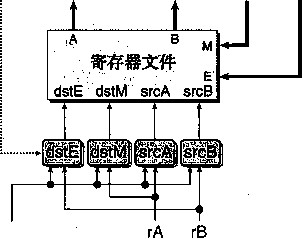
icode
我们查看执行阶段时，会重新审视这个信号，看看如Cnd 何实现条件传送。
®练习题4_19寄存器IDdstM表明写端口 M的目的寄存器，
从存储器中读出来的值valM将放在那里，如图448〜图 4»21中写回阶段第二步所示。写出dstM的HCL代码。
图 4-28
_练习题4.20只有popl指令会同时用到寄存器文件吟两 个写端口。对于指令p_opl%esp, E和M两个写端口会用 到同一个地址，但是写入的数据不同。为了解决这个冲突， 必须对两个写端口设立一个优先级，这样一来，当同一个 周期内两个写端口都试图对一个寄存器进行写时，只有较 高优先级端口上的写才会发生。那么要实现练习题4.7中 确定的行为，哪个端口该具有较高的优先级呢？
3 .执行阶段
执行阶段包括算术/逻辑单元（ALU)。这个单元 根据alufun信号的设置,对输入aluA和aluB执行
SEQ的译码和写回阶段。指 令字段译码，产生寄存器文件 使用的四个地址（两个读和两 个写）的寄存器标识符。从 寄存器文件中读出的值成为信 号valA和valB。两个写回值 valE和valM作为写操作
ADD、SUBTRACT、AND 或 EXCLUSIVE-OR 运算。如 图4-29所示，这些数据和控制信号由三个控制块产生。ALU的输出就是valE信号。
在图4-18〜图4-21中，执行阶段的第一步就是每条指令的ALU计算。列出的操作数aluB 在前面,后面是aluA,这样是为了保证subl指令是valB减去valA。可以看到，根据指令 的类型，aluA的值可以是valA、valC,或者是-4或+4。因此我们可以用下面的方式来表达 产生aluA的控制块的行为：
int aluA
icode in { IRRMOVL, IOPL } : valA;
icode in { IIRMOVL, IRMMOVL, IMRMOVL > : valC;
icode in i ICALL, IPUSHL > : -4;
icode in i IRET, IPOPL > : 4;
Other instructions don't need ALU
_ 练习题 4.21根据图4-18〜图4-21中执行阶段第一步的第一个操作数，写出SEQ中信号aluB的 HCL描述。
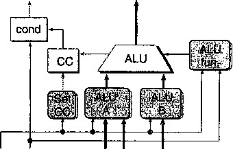
icode ifun valC valA va旧
图4-29 SEQ执行阶段。ALU要么为整数 运算指令执行操作，要么作为加 法器。根据ALU的值，设置条件 码寄存器。检测条件码的值，判 断是否该选择分支
观察ALU在执行阶段执行的操作，可以看到它通 Cnd valE
常是作为加法器来使用。不过，对于0P1指令，我们希 望它使用指令ifun字段中编码的操作。因此，可以将 ALU控制的HCL描述写成：
int alufun =[
icode == IOPL : ifun;
: ALUADD;
执行阶段还包括条件码寄存器。每次运行时，ALU 都会产生三个与条件码相关的信号——零、符号和溢 出。不过，我们只希望在执行OP1指令时才设置条件 码。因此产生了一个信号set一cc来控制是否应该更 新条件码寄存器：
bool set_.ee = icode in { IOPL >;
t 数据出口
instr_valid imem 一 error
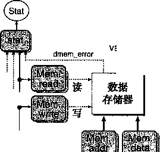
数据人口
icode
WT
valE val A valP
标号为“cond”的硬件单元会根据条件码和功能码来确定是否进行条件分支或者条件数据传 送（见图4-3)。它产生信号Cnd,用于设置条件传送的 dstE,也用在条件分支的下一个PC逻辑中。对于其他 指令，取决于指令的功能码和条件码的设置，Cnd信号 可以被设置为1或者0。但是控制逻辑会忽略它。我们 省略这个单元的详细设计。
_练习题 4.22条件传送指令，简称cmovXX,指令代码 为IRRMOVL。如图4-28所示，我们可以用执行阶段中 产生的Cnd信号实现这些指令。修改dstE的HCL代 码以实现这些指令。
访存阶段
图 4-30
SEQ访存阶段。数据存储器既可以 写，也可以读存储器的值。从存储 器中读出的值就形成了信号valM
访存阶段的任务就是读或者写程序数据。如图4-30 所示，两个控制块产生存储器地址和存储器输数据 (为写操作）的值。另外两个块产生控制信号表明应该 执行读操作还是写操作。当执行读操作时，数据存储器 产生值valM。
图4-18〜图4-21的存储器阶段给出了每个指令类 型所需要的存储器操作。可以看到存储器读和写的地址总是valE或valA。这个块用HCL描 述就是：
int mem_addr =[
icode in { IRMMOVL, IPUSHL, ICALL, IMRMOVL } : valE; icode in { IPOPL, IRET > : valA;
Other instructions don't need address
_练习题 4.23观察图4-16〜图4-19所示的不同指令的存储器操作，我们可以看到存储器写的数据总
是valA或valP。写出SEQ中信号mem_data的HCL代码。
我们希望只为从存储器读数据的指令设置控制信号mem—read,用HCL代码表示就是： bool mem_read = icode in { IMRMOVL, IPOPL, IRET >;
练习题4.24我们希望只为向存储器写数据的指令设置控制信号mem一 write。写出SEQ中信号 mem_write 的 HCL 代码。
访存阶段最后的功能是根据取值阶段产生的icode、imem—error、instr_valid值以 及数据存储器产生的dmem_error信号，从指令执行的结果来计算状态码Stat。
练习题 4.25 写出 Stat 的HCL代码，产生四个状态码 SAOK 、 SADR、SINS 和 SHLT ( 参见图4-26)。
5.更新PC阶段
SEQ中最后一个阶段会产生程序计数器的新值（见图4-31)。如图4-18〜图4-21中最后步 骤所示，依据指令的类型和是否要选择分支，新的PC可能是valC、valM或valP。用HCL 来描述这个选择就是：
int new_pc =[
Call. Use instruction constant icode == ICALL : valC;
Taken branch. Use instruction constant icode := IJXX && Cnd : valC;
Completion of RET instruction. Use value from stack icode == IRET : valM;
PC
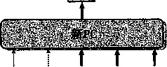
icode Cnd valC valM valP
图 4-31 SEQ 更新 PC 阶段。 嫌指辦码和分支 *标志，从信号valC、 valM和valP中选 出下一t PC的值
Default: Use incremented PC
: valP;
6.SEQ小结
现在我们已经浏览了 Y86处理器的一个完整的设计。可以看 到，通过将执行每条不同指令所需的步骤组织成一个统一的流程，就 可以用很少量的各种硬件单元以及一个时钟来控制计算的顺序，从而 实现整个处理器。不过这样一来，控制逻辑就必须要在这些单元之间 路由信号，并根据指令类型和分支条件产生适当的控制信号。
SEQ唯一的问题就是它太慢了。时钟必须非常慢，以使信号能 在一个周期内传播所有的阶段。让我们来看看处理一条ret指令的 例子。在时钟周期起始时，从更新过的PC开始，要从指令存储器中 读出指令，从寄存器文件中读出栈指针，ALU要减小桟指针，为了 得到程序计数器的下一个值，还要从存储器中读出返回地址。所有这一切都必须在这个周期结束 之前完成。
这种实现方法不能充分利用硬件单元，因为每个单元只在整个时钟周期的一部分时间内才被 使用。我们会看到引入流水线能获得更好的性能。
4.4 流水线的通用原理
在试图设计一个流水线化的Y86处理器之前，让我们先来看看流水线化系统的一些通用属 性和原理。对于曾经在自助餐厅的服务线上工作过或者开车通过自动汽车清洗线的人，都会非常 熟悉这种系统。在流水线化的系统中，待执行的任务被划分成了若干个独立的阶段。在自助餐 厅，这些阶段包括提供沙拉、主菜、甜点以及饮料。在汽车清洗中，这些阶段包括喷水和打肥 皂、擦洗、上蜡和烘干。通常都会允许多个顾客同时经过系统，而不是要等到一个用户完成了所 有从头至尾的过程才让下一个开始。在一个典型的自助餐厅流水线上，顾客按照相同的顺序经过 各个阶段，即使他们并不需要某些菜。在汽车清洗的情况中，当前面一辆汽车从喷水阶段进入擦 洗阶段时，下一辆就可以进入喷水阶段了。通常，汽车必须以相同的速度通过这个系统，以避免 撞车。
流水线化的一个重要特性就是增加了系统的呑吐量 （ throughput),也就是单位时间内服务的 顾客总数，不过它也会轻微地增加延迟 （ latency),也就是服务一个用户所需要的时间。例如, 自助餐厅里的一个只需要沙拉的顾客，能很快通过一个非流水线化的系统，只在沙拉阶段停留。 但是在流水线化的系统中，这个顾客如果试图直接去沙拉阶段就有可能招致其他顾客的愤怒了。 4.4.1计算流水线
让我们把注意力放到计算流水线上来，这里的“顾客”就是指令，每个阶段完成指令执行的 一部分。图4-32是一个很简单的非流水线化的硬件系统例子。它是由一些执行计算的逻辑以及 一个保存计算结果的寄存器组成的。时钟信号控制在每个特定的时间间隔加载寄存器。CD播放 器中的译码器就是这样的一个系统。输入信号是从CD表面读出的位，逻辑电路对这些位进行译 码，产生音频信号。图中的计算块是用组合逻辑来实现的，意味着信号会穿过一系列逻辑门，在 一定时间的延迟之后，输出就成为了输入的某个函数。
300 ps 20 ps
延迟 = 320ps ^ 吞吐量 = 3.12 GIPS
时钟
a) 硬件：未流水线化的
b )流水线图
图4-32非流水线化的计算硬件。每个320ps的周期内，系统用300ps计算组合逻辑函数 ， 20ps将结 果存到输出寄存器中
在现代逻辑设计中，电路延 迟以微 微秒 （ picosecond,简写成“ps ”)， 也就是1(T 12 秒 为单位 来计算。在这个例子中，我们假设组合逻辑需要300ps,而加载寄存器需要20ps。图4-32还给 出了一种时序图，称为流水线图（pipeline diagram )。 在图中，时间从左向右流动。从上到下写 着一组操作（在此称为II、12和13)。实心的长方形表示这些指令执行的时间。这个实现中，在 开始下一条指令之前必须完成前一个。因此，这些方框在垂直方向上并没有相互重叠。下面这个 公式给出了运行这个系统的最大吞吐量：
_ 1 instruction 1000 picosecond 。n
吞吐量=-TT——-：—： x —； — ^ 3.12 GIPS
(20 + 300) picosecond 1 nanosecond
我们以每秒千兆条指令（GIPS),也就是每秒十亿条指令，为单位来描述吞吐量。从头到尾 执行一条指令所需要的时间称为延迟（latency)。在此系统中，延迟为320ps,也就是吞吐童的 倒数。 ' 1
假设将系统执行的计算分成三个阶段(A、B和C),每个阶段需要lOOps,如图4-33所示。 然后在各个阶段之间放上 流水线寄存器 （pipeline registers),这样每条指令都会按照三步经过 这个系统，从头到尾需要三个完整的时钟周期。如图4-33中的流水线图所示，只要II从A进 入B，就可以让12进入阶段A 了，依此类推。在稳定状态下，三个阶段都应该是活动的，每个 时钟周期，一条指令离开系统，一条新的进入。从流水线图中第三个时钟周期就能看出这一点， 此时，II是在阶段C, 12在阶段B,而13是在阶段A。在这个系统中，我们将时钟周期设为 100+20=120ps,得到的吞吐量约为8.33GIPS 。 因为处理一条指令需要3 个时钟 周期，所以这 条流水线的延迟就是 3 Xl 2 0= 36 0ps。我们将系统吞吐量提高到原来的 8 . 33 / 3 .1 2 = 2 . 67 倍，代价是 增加一些硬件，以及延迟的少量增加 （ 360/320=1.12 )。 延迟变大是由于增加的流水线寄存器的 时间开销。
100 ps 20 ps 100 ps 20 ps 100 ps 20 ps
%■
¥
■
m
! ： B ；；
器
延迟 =360 ps 吞吐量 =8.33 GIPS
时钟
a) 硬件：三阶段流水线
Ilf 12 13
* ,■ ¾
时间
b) 流水线图
图 4 - 33 三阶段流水线化的计算硬件。计算被划分为三个阶段A、B和C。每经过一个120ps的周期， 每条指令就行进通过一个阶段
4.4.2流水线操作的详细说明
为了更好地理解流水线是怎样工作的，让我们来详细看 看流水线计算的时序和操作。图4-34是前面我们看到过的 三阶段流水线（见图4-33)的流水线图。就像流水线图上方 指明的那样，流水线阶段之间的指令转移是由时钟信号來控 制的。每隔120ps,信号从0上升至1,开始下一组流水线 阶段的计算。
图4-35跟踪了时刻240〜360之间的电路活动，指 令II经过阶段C, 12经过阶段B,而13经过阶段A。就 在时刻240 (点1)时钟上升之前,阶段A中计算的指令 12的值已经到达第一个流水线寄存器的输入，但是该寄存 器的状态和输出还保持为指令II在阶段A中计算的值。，指令II在阶段B中计算的值已经到 达第二个流水线寄存器的输人。当时钟上升时，这些输入被加载到流水线寄存器中，成为 寄存器的输出 （ 点 2) 。另外,阶段A的输入棘设雰成发起指令I?的i十算。然后信号传播 通过各个阶段的组合澤辑（点3)。就像图中点'^1：的曲线化的波阵面(curved wavefront) 表明的那样，信号可能以木同的速率通过各+本同的辣分。在时刻:36p之論,结果到K
ii |
12
13
I A I
C：
A ；
, B
240 360
时间
480 600
图4-34三阶段流水线的时序。时钟信 号的找辦控制指令从■^流 7燃阶麟細下段